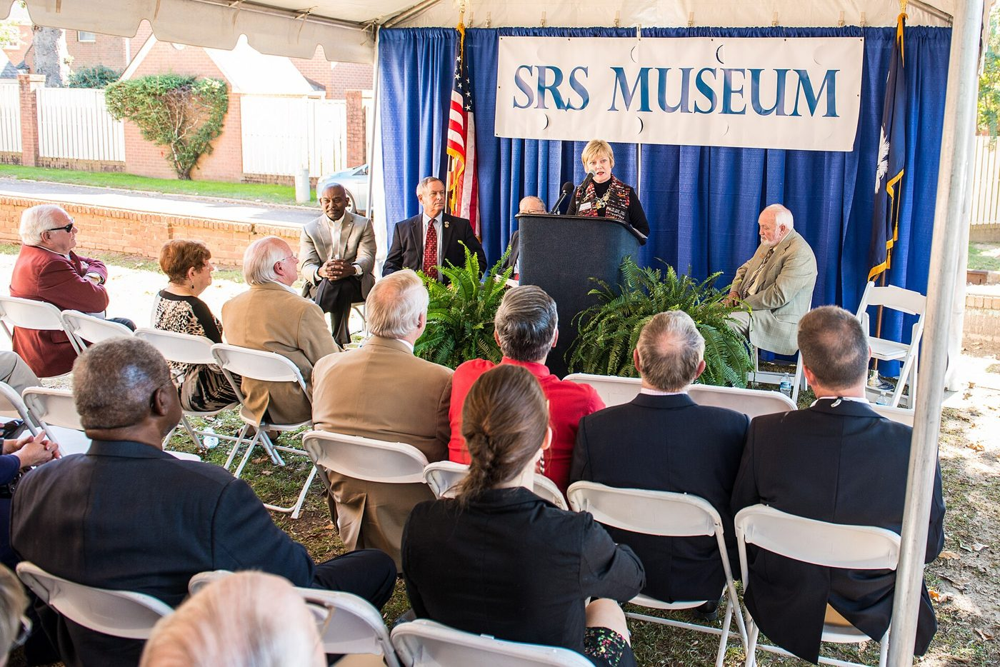

Part 10 of 10 in Chapter 3
The Plant's Museum
The SRS (Savannah River Site) Museum opened in Aiken after a 2014 ribbon-cutting (WB). It is still open to the public. In November 2026 its website listed free admission, Wednesday through Saturday from 10 a.m. to 4 p.m., at 224 Laurens Street SW, run by the SRS Heritage Foundation (WB: SRS Museum, 2026). The museum's first website is gone, but the Wayback Machine has it (WB). The site's archaeologists and its Cold War historic preservation program work with it (WB) — the same program that collected Ellenton's memories in 1990.

.jpg){kind=link}
The federal record of historic engineering holds one part of the plant in detail. The Historic American Engineering Record documented the Physics Assembly Laboratory in M Area in 107 photographs and 123 data pages. It was home to the zero-power Process Development Pile, which set the physics for plutonium and tritium production in the five reactors (WB: Library of Congress, HAER SC-43).
Follow this thread, the displaced towns. Earlier: Chapter 1, The Towns Inside the Fence.